来源：https://ovumyiw67u1.feishu.cn/docx/Xo3TdARTCoPfWdx4F3hcNzqqnqd
最新版本已更新，请移步
嗨，大家好，我是RIO
专门研发"能搞钱的RPA工具"，定期公布RPA工具以及分享背后的运营逻辑
今天分享主题是公众号爆文写作
由于本人在12月参与第一次航海---公众号爆文写作
在航海最后一天终于有第一笔收入
具体数字在各位大佬面前不值一提
算是从0到1跑通了整个项目
1个月以来，一边痛苦一边思考
作为新人，太多太多太多太多问题，想不明白
每次看手册听课程都觉得很简单，自己做很难，有没有？
选择哪个赛道好难？找哪个对标好难？
选择什么话题好难？素材哪里找难？
热点在哪？蹭哪个热点好难？
怎么内容有人看？什么内容会爆？
怎么提高原创度？怎么提高完读率？
怎么涨粉？0阅读怎么办？忽然没流量了好慌？
...
关于爆文，许多教程停留在方法论上，而且越来越玄学
身为理科生，真心听不懂文科生在BB啥
所以，我把这两个月学到看到的
以纯数据的角度来探讨文学
把所有的思考都融入到一行行的代码上，落地成一个个RPA工具
给公众号爆文做阶段性总结
以我理解，公众号写爆文的套路，按顺序来应该为：“赛道-选题-写作-运营”
1、选赛道，需要市场数据，先要了解每个赛道收入情况，以及分析赛道文章的爆文因子，才有决策依据
2、选题材，需要监控市场，采集今天的热点与对标账号阅读量，以及分析大盘走势，才选出今日话题与素材
3、写文章，需要挖掘读者需求，还需要一个好标题，文章内容要过原创，要有深度，要有情感
4、做运营，需要一键同步到其他平台才有更多收入，通过做起步的数据才能卡到更大的流量池
对应每个环节配置合适的工具，闭环才算走通
废话不多说，我们聊点刺激的话题如下，顺便公布几个比较满意的工具
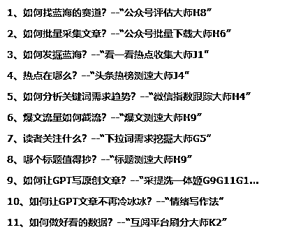
考虑大家对代码都不熟，代码不做过多介绍
只展示每个工具运作效果与分享工具的设计逻辑
写爆文第一步要选对赛道（或称为领域）
核心在于判断这个赛道是否蓝海
根据前辈说，如果新号的文章，很容易出爆文，就证明是个蓝海
最终方案变成了找对标账号，查看阅读数据，统计他们爆文率
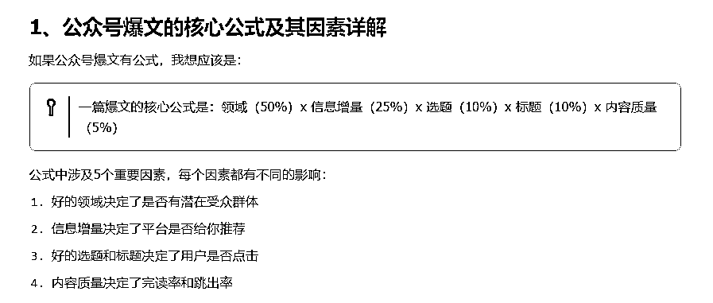
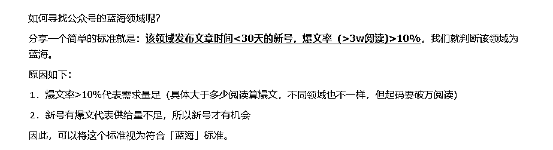
介绍如何对标方法有很多，这里就不展开了
这个工具是一个找对标的统计助手
有了目标公众号后，他能采集公众号下面全部文章，包括标题，发布时间，阅读量，点赞数
效果视频：https://www.bilibili.com/video/BV1kF4m1771d/
首先在电脑上打开公众号，手动下滑，滚到多少页采集多少页，然后运行脚本
然后程序会采集数据并对数据进行统计，爆文率，平均阅读量，发文频率等，按最低1.8元每千次估算，就能评估这个号的收入水平
最终形成一个文档，放在桌面，下图对“生财”最近一个月的情况做了全身检查
结果“生财”基本上是粉丝在阅读，点赞量很高，但阅读量不高，平均有6-7千，没有爆文出现，这个阅读量一个月保底能赚300块
然后统计下面是文章清单，有发布日期阅读量，点赞量与标题，可以用了作为写作参考
多收集几个，打包到一起，大概知道该赛道收入情况，净是这块数据应该可以卖9块9吧
有了这些情报，好处主要能防止心态崩溃（实测有效），或者防止预期起太高，降低失落感
看别人起号的新号，能看到他们一步一步数据如何来的
什么时候出爆文，什么时候流量又下去了，坚持多久又上来了
起号路径有所了解了，心态不会太过着急
第二，有了收入预期也了解到这条赛道能赚多少
避开不赚钱的赛道，选择比努力重要
为什么以1.8去换算呢，就是为了不要过高期望
什么月入过千都是割韭菜的，不可信
因为数据放在眼前
怪不得，前辈说，多开号才是正道
一个号收入有限，天花板就在那里
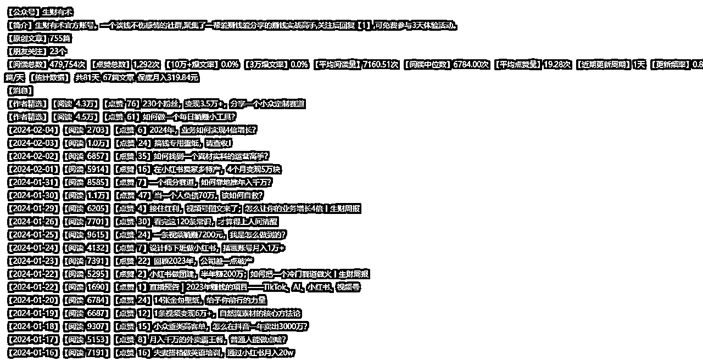
附：生财有术2月5日公众号完整体检报告:
写作前要建立素材库，常规做法就是下载对标账号的文章
筛选出爆文，多看同赛道的爆文，自己就能总结出该赛道的爆款因子
听说下载文章外面收费很贵，的确有技术门槛
难点在于元素的定位，一般人采集不到
由于微信的文章展示方式多种多样
一行文字，二行文字，有图片，没有图片
中间还可能穿插纯图片分享
影刀类似的工具根本没法找到相似元素组
导致无法实现轮询
需要用非常规的做法才能实现
该工具能定位下载标题，从而点开文章，采集链接，发布时间地点，正文，如图
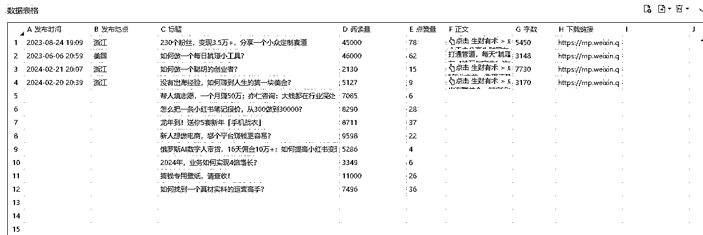
首先在电脑上打开公众号，手动下滑，滚到多少页采集多少页，然后运行脚本
程序会先找到标题，再用标题定位到文章
然后打开文章，把文字复制下来
保存到同一个Excel里，如此循环
一个公众号生成一个Excel文件
之后可以把几个Excel文件合并到一个表里
然后通过Excel的工具进行过滤与排序
可以得到同一个赛道下对标账号的爆文数据了
展示视频：https://www.bilibili.com/video/BV1qz421d7W5/
附件：采集生财有术公众号文章的效果
通常，外面的教程都给你找好了赛道
听话照做就行，可是，为什么还是难起来
原因是放出来的赛道，基本都已经红海
而且不断有看过教程的新手涌入，只会越来越卷
所谓，授之以鱼，不如授之以渔
学会自己找赛道，才是正道
如何找？凭感觉来？你喜欢的文章，读者未必喜欢看
谁最能知道读者喜欢什么
微信！他有全盘的数据，他告诉你了，你却视而不见而已
例如，刷看一看的时候会不会看到有带“热点资讯”标签的文章
还是10万+的文章，都是平台算法中得出来大众喜欢的文章
这个工具可以在你在忙时候，默默地刷新看一看页面
记录下带标签的文章，包含标题与发布的公众号
等你闲的时候给你参考，挖掘潜在的蓝海赛道
你可以用上面的评估大师与批量下载大师对这些号进行分析
最后决定要不要加入该赛道
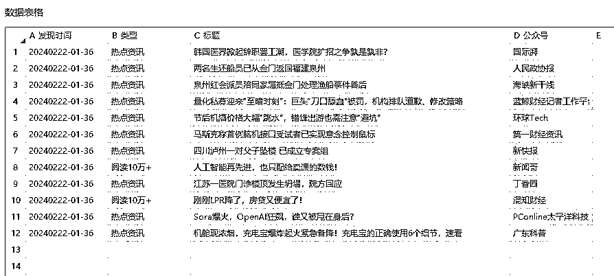
展示视频：https://www.bilibili.com/video/BV1qz421d7W5/
蹭热点都知道好，热点哪里找？
关于热点，都在关注几个大平台的榜单，或者数据分析网站，例如新榜或易撰
但热点是动态的，除了排名，还需要了解他的数量级，发布时长，流量速度
我发现，阅读量与排名没有直接关系
反而流速越快，真实反映了这个热点吸引力大
通常一个热点事件各平台同步发布的，但头条跑的最透明
跑出来的榜单比公众号快半天
一般地，6小时后微信就跟着火起来
你没看到只是微信没有推荐给你账号而已
这个工具主要针对今日头条的
头条把每个事件做了统计和打包了几条关键文章
脚本会按榜单顺序依次打开
采集阅读总量，找出最早发布的文章
流速=阅读总量/(现在时间-最早发布的时间)
工具最终生成一个EXCEL文件
我一般是通过Excel的工具按流速排序，得到热点结果
最近建了一个群，定时分享热点信息，感兴趣可以链接我
通过这个方法成功预测到“谷歌杀妻案”“梅西事件”
展示视频：https://www.bilibili.com/video/BV1t1421Z771/
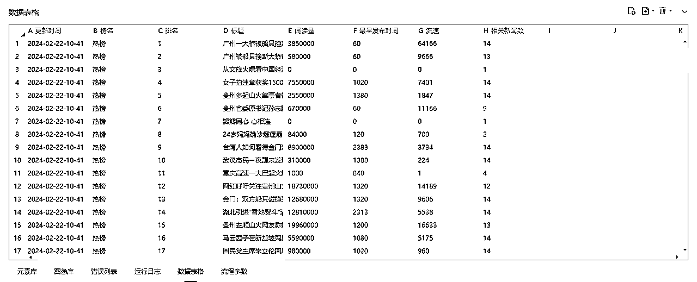
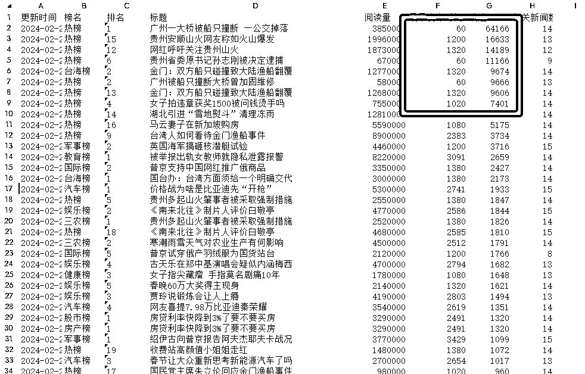
附：2月22日10点58分头条热点采集数据表格
微信指数是一个小程序
官方说法，体现关键词相关内容的受欢迎程度（即读者需求量）
只有这个地方可以查到微信公开的数据
这个数据在中午12点更新，是昨日统计结果
跟踪某个词的变化，就可以看到这个词的趋势
也可以横向对比，优化你的关键词
这个工具能自动按表格查询与采集
形成文件，放在桌面
可以理解为昨日赛马结果
而且指数更多来源于视频号
指导公众号不太准确，我作为大盘走势参考
可能视频号项目更具有指导作用
展示视频：https://www.bilibili.com/video/BV1Jz421R73E/
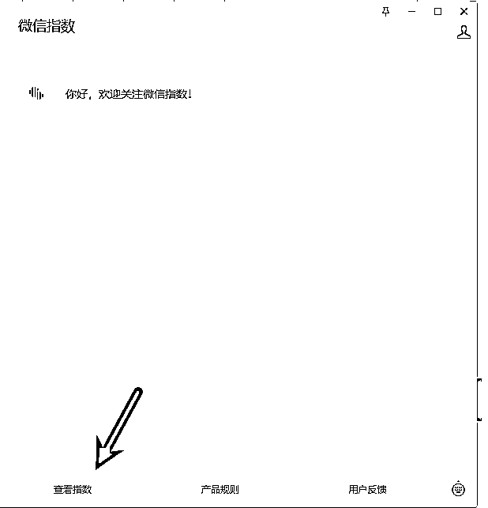
附：跟踪结果文件
每天选题最伤脑筋，但选题直接影响收入，重中之重
蹭热点是选题一种打法，能带来突发性的增长（参考热榜测速大师），缺点是不常有，中标概率不高
还存在另一个打法，深耕某个垂直赛道，细水长流，不用操心世态炎凉
但极度考验持续输出能力
基本上，普通人没有这个能力（本人也没有）
爱情都有七年之痒，何况赛道，基本上一周两周都耗光了存货与耐性
有些教程让你去洗历史爆文，原理是“爆过还会再爆”
其实历史爆文全国人民洗了不止千百遍，机洗手洗正洗反洗都有，需要更刁钻的角度更猛的操作才能搾出汁
意味洗稿成本越来越高与爆文概率越来越低
有没有破解之计？有！找新爆文截他流
原理是监控赛道的对标账号（3个或以上，越多当然越好，没有限制）
采集他们今天和昨天的新文章，计算他们的流速
发现异常值，就是新爆文种子，然后...懂得都懂
这个工具能按你通过的账号名单去查找发布文章记录，统计流速
最终形成EXCEL文件，放在你桌面
所以为什么你不要轻易公布自己的号或文章么
就是一旦被监控了，你就成为我的测款账号，每天准时检查作业
在黑暗深林里，不知道有多少个像我这样猎人，偷偷盯着
展示视频：
顺便找个三个公众号（多多得罪有怪莫怪）采集他们文章，分析如图
多少流速才算合格，要看赛道，看多了就自然知道
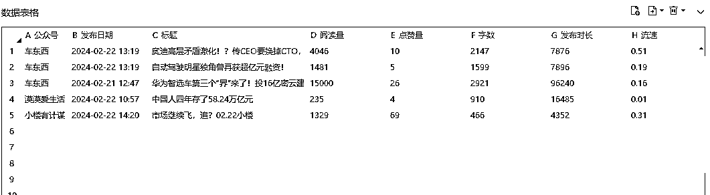
附：最终结果文件
选好题材后，怎么知道读者对这个选题关注点在哪
作为读者，如果对某个话题很好奇，最常见就是搜搜看
搜索框的下拉提示词，就是平台给我们总结这类用户常常搜的那些词
这些词就是读者需求点
下拉词后面还有下拉词的下拉词 ，所谓长尾
这个工具能把所有1级，2级的词都记录下来
不过，挑排名靠前的几个点来写应该足够了
展示视频：https://www.bilibili.com/video/BV1qS421P7ZT/
当然还可以去抖音、小红书执行相同操作
但要考虑读者受众是否一致
建议做公众号就在公众号找答案稳妥点
以最近热点“沥心沙大桥”为例，文章侧重写解答这些读者需求，文章会有很好的SEO
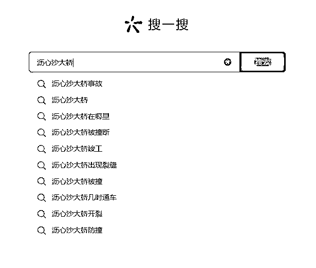
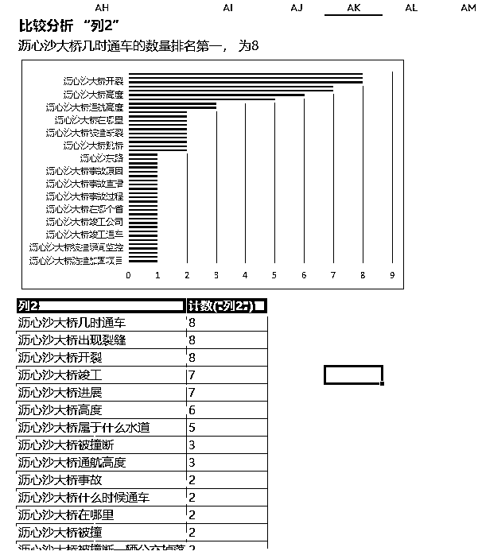
选好题材后，必须选个好标题，提高点击率
有些大号，随便起个标题，都可以爆，不讲道理
我们这种小小小小号，随便起标题马上0阅读，不信你试试看
所以必须为我们闺女找个好人家
好标题胚胎通常来源于爆文
当你搜一搜，把同个话题的，当天最热的文章清单刷出来
这么多标题该选哪个？这个工具可以给您参考
运行脚本，就会显示每个文章的流速
同样是1万阅读，有些标题只要1小时就能完成，有些用了1天
按降序排列，根据公众号的名称滤掉大号
剩下就是低粉账号，靠实力吸睛的标题胚胎
据前辈说，1分钟200阅读增量属于小爆款
有了胚胎，再用开门雷击的方法改造一下，就是我们的爆款标题
以最近热点“沥心沙大桥”为例，跑出来的结果如下
看到没，这个就是纯实力的低粉爆款号（多多得罪有怪莫怪）
找到标题后...懂的都懂
展示视频：https://www.bilibili.com/video/BV1ov42167ix/
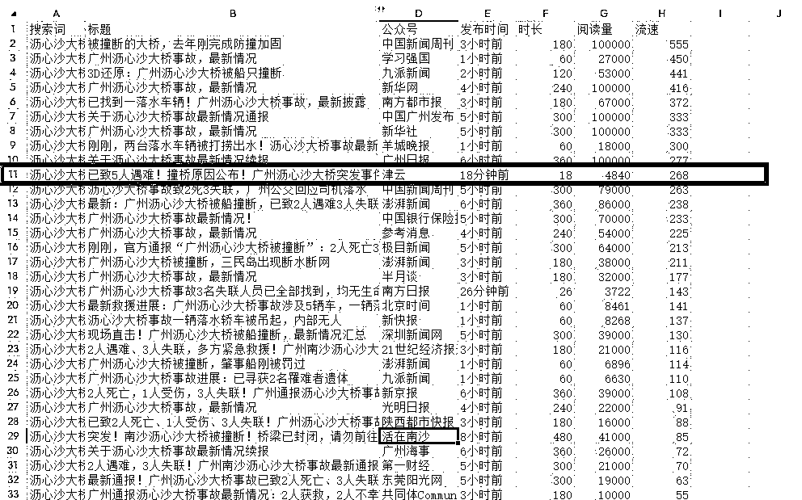
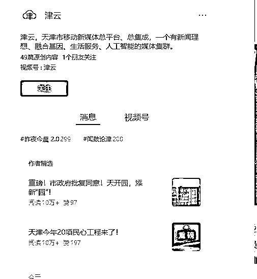
真正的问题是如何提高原创度？
根据圈友的分享，行内流传一种打法：“拼接法”
这套打法，需要采集两篇或两篇以上文章，然后提取相同论点A的不同论据B和C
然后把论据B+C交给GPT，让他围绕着论点A重新编写文章
过程中还可以调整论述结果，例如原文是先因后果，改写为先果后因
一番操作基本上等于原创
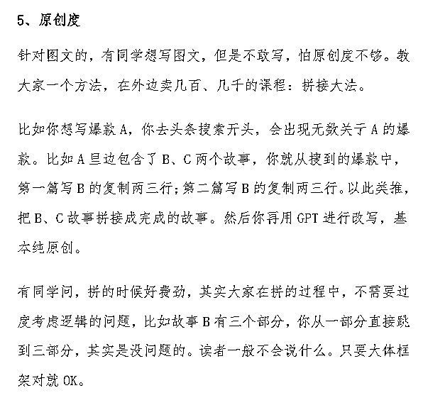
如何让文章显得有深度？我理解，所谓深度就是有信息增量
在原文基础上增加了更多细节，原文没有硬知识，原文没有的小八卦，或者原文没有观点
例如，有看到过一篇文章，报道了某个明星死于心梗的新闻
另一篇文章在原新闻的基础上增加了防心梗的注意事项
另一篇文章则增加了明星他爸也有心梗的家族史
这都是增加了文章信息，比原文挖得更细更深入
当然如有自己新观点更好
基于上面的原理--工具采用了采提洗三步法
第一步（采）：需要机器人具备多端采集的能力，目前适配了微信PC端，今日头条WEB端，今天头条APP端、小红书WEB端，自定义
通过搜索工具可以找到很多同个话题的不同观点的文章，还记得下拉词需求挖掘大师么
他能协助你找到“值得写的”读者需求与文章
机器人除了能采集文章标题与正文，顺便完成图片去水印，简单去重
第二（提）：要机器人有批量调用GPT的能力，这步需要GPT把文章拆解
请将文章分为若干章节，并且总结归纳每个章节的中心论点
找出该章节中支撑论点的论据，统计论据数量并摘录各论据原文
并且保留姓名、时间、地点、金钱、职位、对话和具体数字等关键信息
在于对GPT网页版的监听，这里有个小技巧
那个发送按钮的状态在GPT书写的时候，是灰底，写完了，是实黑（比设置固定等待时长高级一些）
根据这个状态可以完成全自动批量操作
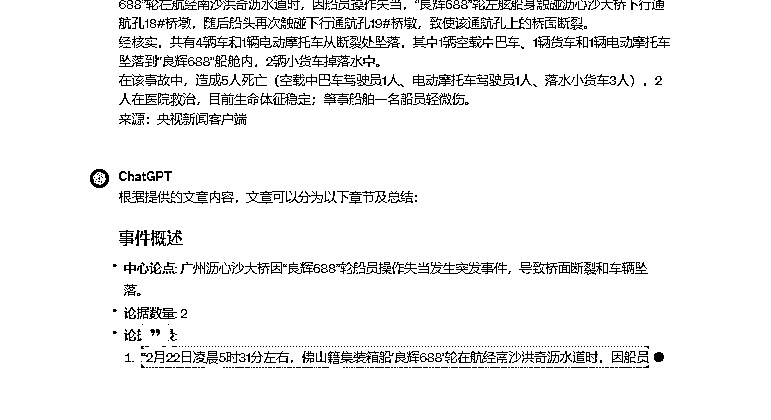
第三（洗）：需要机器人根据论点与论据交给写作机器人，分段重写
多段合并一起，送去5118检查违规词，再发送到公众号排版工具，生成样式
完成整个创作过程
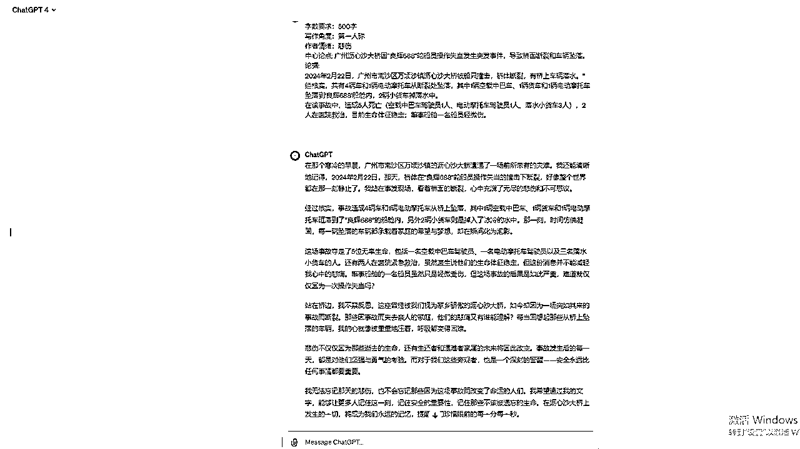
prompt是一个炼丹的历程，不断教然后修正，再教再修正
没有最好，只有更好
这里分享让GPT写文章带情绪的提示词
破零就是我们这些新人最难熬的
辛辛苦苦写的文章没人看
所以，自己文章要自己推广
有没有一些组织能帮忙推广呢
网上真的有，有些组织号称有1W+运营者在抱团取暖
所谓，互阅平台
好处是可以做“好看”的数据给到平台
你帮别人阅读攒取积分，花积分请人阅读自己的文章
一来一回，实现人人为我，我为人人
等于说，只要手头有积分就有阅读量
尤其可以花高价请人点击“在看”
一旦有人在看了，平台会推给他朋友，他朋友有可能也看，雪球就滚起来了
问题变成了如何攒取更多积分
平台有规定满足10秒阅读时长，还有必须看到文章末尾
把当前阅读量回填到平台，才能合格阅读
等于说攒取积分要花费人力，谁有这个闲工夫
这个工具就能帮上你
他能自动完成整个流程，挂机刷积分，无限撸
让你实现积分自由
积分多了，想做什么数据都可以
展示视频：https://www.bilibili.com/video/BV1um411Q7J1/
以上是参与12月航海的成果
公众号文章写作肯定会继续下去。继续深挖
因为对于我来说，公众号不是玄学
而是实实在在的数据，实实在在的抓手
每个决策都不是来自主观
而是数据告诉我该怎么做
爆文不是靠大运
这就是纯数据流
另外看到平台在打击AI洗稿，其实是好事
不希望RPA应用停留低质洗稿软件
他应该有更大生产力
他需要有人教更深层次的问题
对公众号这套打法感兴趣，可以链接我
对影刀RPA开发有问题的也可以链接我
趁机我想找个小红书的导师，能够带徒直接赚到米的那种
希望共同开发新武器，分享成果，例如
这是生财里面有视频贴，呼吁去做小红书评论的采集
据说，通过评论可以挖掘需求出来
但市面上很少这类软件，所以运营人员都手工采集
比较麻烦
这个需求在网页端是比较难实现的
要处理折叠与异步加载
但在手机上会比较简单实现
虽然开发已出来了，但不会用啊
希望真正懂的人带走，随便带带我
感谢文中引用到的两位大佬精彩文章： 毛韩教练、徐言随谈
感谢这次航海的教练与领队
链接方式 rio0235